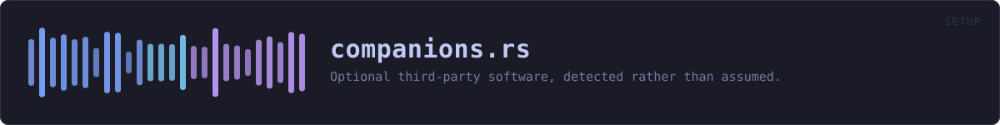

crates/veilvoice-setup/src/companions.rs
veilvoice-setup · 761 lines · read the source
Optional third-party software, detected rather than assumed.
Four programs make VeilVoice easier to live with and none of them is part of VeilVoice. A virtual audio cable is what lets live mode feed a veiled microphone into a video call; an audio editor is how most people trim a recording before veiling it. This module says which are already on the machine, who makes each one, under what licence, and — for the ones that are not — exactly what command would install it.
Three rules, and none of them relaxes
Nothing is installed without an explicit yes. There are no checkboxes here to leave ticked. Companion::offer produces a command; running it is a separate deliberate act by the caller, on one named program at a time.
VeilVoice never runs somebody else's installer. Where the software is proprietary or ships as a driver — VB-CABLE is both — the offer is to open the vendor's page, not to fetch and execute an unverified binary. This project's front page is about verifying what you run; downloading a signed release, checking its signature, and then silently running an unchecked third-party .exe from the same program would be a strange thing to do with that reputation.
Privilege is reported, never requested. A system package manager needs root, and a graphical program cannot honestly collect a sudo password. Offer::Command carries a needs_privilege flag, run refuses any command that sets it, and a front end shows such a command rather than pretending to run it.
Detection is a probe, and says when it could not tell
Presence has three states, not two. "I looked in the places this software installs itself and found nothing" and "I could not read the place I wanted to look" are different answers, and reporting the second as the first is how a tool ends up offering to install something that is already there. Every probe here is a file-system or PATH lookup: no subprocess, no registry sweep, and nothing that takes long enough to need a spinner.
The probes look where each program installs itself by default. Somebody who has put Audacity somewhere unusual will be told it was not detected, which is exactly what the words say — Presence::NotDetected is not a claim that the software is absent from the machine.
WHAT THIS FILE CONTAINS
761 lines defining 19 functions (10 public), 3 types and 2 constants. Everything below is read out of the source, so it cannot disagree with the code.
The types it owns.
enum Presenceline 49 — What a probe found.enum Offerline 82 — What VeilVoice can offer to do about a companion that is not there.struct Companionline 140 — One piece of optional third-party software.
What happens when it runs. These are the ways in: public, and nothing else in this file calls them, so they are what an outside caller reaches first.
Presence::is_presentline 66 — True only for Presence::Present.Presence::describeline 71 — A short line for a user interface, in the project's usual register.Offer::is_runnableline 114 — True when a front end may run this itself.Offer::command_lineline 126 — The command as a single line, for showing or copying.Companion::detectline 159 — Look for it, without changing anything.
reachesdetect_audacity,detect_blackhole,detect_pipewire,detect_vb_cable,env_path,first_existing,on_pathCompanion::offerline 170 — What could be done about it on this platform.
reachesaudacity_offer,brew,on_pathfor_this_platformline 265 — The companions that mean anything on the platform this is running on.by_keyline 272 — Find one by Companion::key.runline 282 — Run an offer, and return what it printed.open_pageline 323 — Open a companion's own page in the user's browser.
WHAT CALLS WHAT
The functions this file defines, and the calls between them. An edge means the callee's name appears, called, inside the caller's body — a syntactic reading, not a type-resolved one.
The same graph as Mermaid source
%%{init: {"theme":"base","themeVariables":{"background":"#1a1b26","primaryColor":"#1f2335","primaryTextColor":"#c0caf5","primaryBorderColor":"#7aa2f7","secondaryColor":"#16161e","tertiaryColor":"#16161e","lineColor":"#737aa2","textColor":"#c0caf5","mainBkg":"#1f2335","nodeBorder":"#7aa2f7","clusterBkg":"#16161e","clusterBorder":"#2f3549","fontFamily":"ui-monospace, SFMono-Regular, Consolas, monospace","fontSize":"14px"}}}%%
flowchart TD
n_is_present(["Presence::is_present<br/>line 66"])
n_describe(["Presence::describe<br/>line 71"])
n_is_runnable(["Offer::is_runnable<br/>line 114"])
n_command_line(["Offer::command_line<br/>line 126"])
n_detect(["Companion::detect<br/>line 159"])
n_offer(["Companion::offer<br/>line 170"])
n_for_this_platform(["for_this_platform<br/>line 265"])
n_by_key(["by_key<br/>line 272"])
n_run(["run<br/>line 282"])
n_open_page(["open_page<br/>line 323"])
n_on_path["on_path<br/>line 358"]
n_first_existing["first_existing<br/>line 377"]
n_env_path["env_path<br/>line 381"]
n_detect_vb_cable["detect_vb_cable<br/>line 394"]
n_detect_blackhole["detect_blackhole<br/>line 417"]
n_detect_pipewire["detect_pipewire<br/>line 439"]
n_detect_audacity["detect_audacity<br/>line 450"]
n_brew["brew<br/>line 476"]
n_audacity_offer["audacity_offer<br/>line 501"]
n_audacity_offer --> n_brew
n_audacity_offer --> n_on_path
n_brew --> n_on_path
n_detect --> n_detect_audacity
n_detect --> n_detect_blackhole
n_detect --> n_detect_pipewire
n_detect --> n_detect_vb_cable
n_detect_audacity --> n_env_path
n_detect_audacity --> n_first_existing
n_detect_audacity --> n_on_path
n_detect_pipewire --> n_on_path
n_detect_vb_cable --> n_env_path
n_offer --> n_audacity_offer
n_offer --> n_brew
click n_is_present href "https://github.com/tilas01/veilvoice/blob/main/crates/veilvoice-setup/src/companions.rs#L66" "open the source"
click n_describe href "https://github.com/tilas01/veilvoice/blob/main/crates/veilvoice-setup/src/companions.rs#L71" "open the source"
click n_is_runnable href "https://github.com/tilas01/veilvoice/blob/main/crates/veilvoice-setup/src/companions.rs#L114" "open the source"
click n_command_line href "https://github.com/tilas01/veilvoice/blob/main/crates/veilvoice-setup/src/companions.rs#L126" "open the source"
click n_detect href "https://github.com/tilas01/veilvoice/blob/main/crates/veilvoice-setup/src/companions.rs#L159" "open the source"
click n_offer href "https://github.com/tilas01/veilvoice/blob/main/crates/veilvoice-setup/src/companions.rs#L170" "open the source"
click n_for_this_platform href "https://github.com/tilas01/veilvoice/blob/main/crates/veilvoice-setup/src/companions.rs#L265" "open the source"
click n_by_key href "https://github.com/tilas01/veilvoice/blob/main/crates/veilvoice-setup/src/companions.rs#L272" "open the source"
click n_run href "https://github.com/tilas01/veilvoice/blob/main/crates/veilvoice-setup/src/companions.rs#L282" "open the source"
click n_open_page href "https://github.com/tilas01/veilvoice/blob/main/crates/veilvoice-setup/src/companions.rs#L323" "open the source"
click n_on_path href "https://github.com/tilas01/veilvoice/blob/main/crates/veilvoice-setup/src/companions.rs#L358" "open the source"
click n_first_existing href "https://github.com/tilas01/veilvoice/blob/main/crates/veilvoice-setup/src/companions.rs#L377" "open the source"
click n_env_path href "https://github.com/tilas01/veilvoice/blob/main/crates/veilvoice-setup/src/companions.rs#L381" "open the source"
click n_detect_vb_cable href "https://github.com/tilas01/veilvoice/blob/main/crates/veilvoice-setup/src/companions.rs#L394" "open the source"
click n_detect_blackhole href "https://github.com/tilas01/veilvoice/blob/main/crates/veilvoice-setup/src/companions.rs#L417" "open the source"
click n_detect_pipewire href "https://github.com/tilas01/veilvoice/blob/main/crates/veilvoice-setup/src/companions.rs#L439" "open the source"
click n_detect_audacity href "https://github.com/tilas01/veilvoice/blob/main/crates/veilvoice-setup/src/companions.rs#L450" "open the source"
click n_brew href "https://github.com/tilas01/veilvoice/blob/main/crates/veilvoice-setup/src/companions.rs#L476" "open the source"
click n_audacity_offer href "https://github.com/tilas01/veilvoice/blob/main/crates/veilvoice-setup/src/companions.rs#L501" "open the source"
classDef entry fill:#1f2335,stroke:#7aa2f7,color:#c0caf5
class n_is_present,n_describe,n_is_runnable,n_command_line,n_detect,n_offer,n_for_this_platform,n_by_key,n_run,n_open_page entry
classDef helper fill:#1f2335,stroke:#bb9af7,color:#c0caf5
class n_on_path,n_first_existing,n_env_path,n_detect_vb_cable,n_detect_blackhole,n_detect_pipewire,n_detect_audacity,n_brew,n_audacity_offer helperThis site loads no third-party script, so it cannot run Mermaid; the diagram above is the same nodes and edges drawn by the generator instead. GitHub renders the source below directly.
ITEMS
| Item | Line | Documentation |
|---|---|---|
Presence pub enum | 49 | What a probe found. |
Presence::is_present pub fn | 66 | True only for Presence::Present. |
Presence::describe pub fn | 71 | A short line for a user interface, in the project's usual register. |
Offer pub enum | 82 | What VeilVoice can offer to do about a companion that is not there. |
Offer::is_runnable pub fn | 114 | True when a front end may run this itself. |
Offer::command_line pub fn | 126 | The command as a single line, for showing or copying. |
Companion pub struct | 140 | One piece of optional third-party software. |
Companion::detect pub fn | 159 | Look for it, without changing anything. |
Companion::offer pub fn | 170 | What could be done about it on this platform. |
ALL pub const | 214 | Every companion this project knows about, in the order a front end should show them. |
for_this_platform pub fn | 265 | The companions that mean anything on the platform this is running on. |
by_key pub fn | 272 | Find one by Companion::key. |
run pub fn | 282 | Run an offer, and return what it printed. |
open_page pub fn | 323 | Open a companion's own page in the user's browser. |
on_path fn | 358 | Is stem an executable on this process's PATH? |
first_existing fn | 377 | The first of candidates that exists. |
env_path fn | 381 | |
detect_vb_cable fn | 394 | VB-CABLE installs an audio driver, and a driver is a file in a directory any user can read. |
detect_blackhole fn | 417 | BlackHole is a HAL plug-in, and those live in exactly one place. |
detect_pipewire fn | 439 | PipeWire is running or it is not, and pw-cli beside it is the sign that the userspace tools are installed. |
detect_audacity fn | 450 | Audacity is on PATH on Unix and in one of three directories on Windows. |
brew fn | 476 | |
audacity_offer fn | 501 | The route to Audacity differs per platform, and on Linux per distribution. |
UNIX_PACKAGE_MANAGERS const | 551 | Package managers, and the arguments that install one named package non-interactively. |